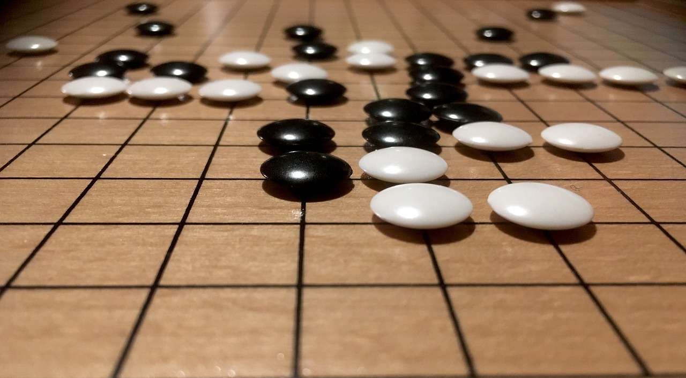

What is Deepmind?
From Wikipeia

DeepMind Technologies is a British artificial intelligence company founded in September 2010, currently owned by Alphabet Inc. The company is based in London, with research centres in Canada, France, and the United States.
Acquired by Google in 2014, the company has created a neural network that learns how to play video games in a fashion similar to that of humans, as well as a Neural Turing machine, or a neural network that may be able to access an external memory like a conventional Turing machine, resulting in a computer that mimics the short-term memory of the human brain.
The company made headlines in 2016 after its AlphaGo program beat a human professional Go player Lee Sedol, the world champion, in a five-game match, which was the subject of a documentary film.
A more general program, AlphaZero, beat the most powerful programs playing go, chess and shogi (Japanese chess) after a few days of play against itself using reinforcement learning.
What deepmind has been capable of
From Wikipeia
Machine learning

DeepMind Technologies' goal is to "solve intelligence", which they are trying to achieve by combining "the best techniques from machine learning and systems neuroscience to build powerful general-purpose learning algorithms".
They are trying to formalize intelligence in order to not only implement it into machines, but also understand the human brain, as Demis Hassabis explains:
Google Research has released a paper in 2016 regarding AI Safety and avoiding undesirable behaviour during the AI learning process. Deepmind has also released several publications via its website. In 2017 DeepMind released GridWorld, an open-source testbed for evaluating whether an algorithm learns to disable its kill switch or otherwise exhibits certain undesirable behaviours.
To date, the company has published research on computer systems that are able to play games, and developing these systems, ranging from strategy games such as Go to arcade games. According to Shane Legg, human-level machine intelligence can be achieved "when a machine can learn to play a really wide range of games from perceptual stream input and output, and transfer understanding across games[...]."
Deep reinforcement learning
As opposed to other AIs, such as IBM's Deep Blue or Watson, which were developed for a pre-defined purpose and only function within its scope, DeepMind claims that its system is not pre-programmed: it learns from experience, using only raw pixels as data input. Technically it uses deep learning on a convolutional neural network, with a novel form of Q-learning, a form of model-free reinforcement learning. They test the system on video games, notably early arcade games, such as Space Invaders or Breakout. Without altering the code, the AI begins to understand how to play the game, and after some time plays, for a few games (most notably Breakout), a more efficient game than any human ever could.
In 2013, DeepMind demonstrated an AI system could surpass human abilities in games such as Pong, Breakout, Space Invaders, Seaquest, Beamrider, Enduro and Q*bert. DeepMind's AI had been applied to video games made in the 1970s and 1980s; work was ongoing for more complex 3D games such as Doom, which first appeared in the early 1990s.
AlphaGo

In October 2015, a computer Go program called AlphaGo, developed by DeepMind, beat the European Go champion Fan Hui, a 2 dan (out of 9 dan possible) professional, five to zero. This is the first time an artificial intelligence (AI) defeated a professional Go player. Previously, computers were only known to have played Go at "amateur" level. Go is considered much more difficult for computers to win compared to other games like chess, due to the much larger number of possibilities, making it prohibitively difficult for traditional AI methods such as brute-force.
In March 2016 it beat Lee Sedol—a 9th dan Go player and one of the highest ranked players in the world—with a score of 4-1 in a five-game match.
In the 2017 Future of Go Summit, AlphaGo won a three-game match with Ke Jie, who at the time continuously held the world No. 1 ranking for two years. It used a supervised learning protocol, studying large numbers of games played by humans against each other.
In 2017, an improved version, AlphaGo Zero, defeated AlphaGo 100 games to 0. AlphaGo Zero's strategies were self-taught. AlphaGo Zero was able to beat its predecessor after just three days with less processing power than AlphaGo; in comparison, the original AlphaGo needed months to learn how to play.
Later that year, AlphaZero, a modified version of AlphaGo Zero, gained superhuman abilities at chess and shogi. Like AlphaGo Zero, AlphaZero learned solely through self-play.